Story · 01
공간 구성과 카메라 애니메이션
사용 도구 · Blender · Codex
고지도와 건축물 사진을 바탕으로 Story의 공간을 만들고, 인물을 만나는 순서에 맞춰 카메라 동선을 정했습니다. Blender에서 렌더링한 영상은 이후 일러스트화와 영상 생성에 사용할 공간과 움직임의 기준으로 준비했습니다.
공주목 지도와 마을 배치도
1872년 「공주목지도」에서 제금루·동헌 혜의당·객사·민가와 봉황산의 위치를 살펴봤습니다. 주요 장소의 관계를 공간 구상 지도로 정리한 뒤, 건물과 인물을 배치할 제작용 지도로 옮겼습니다.
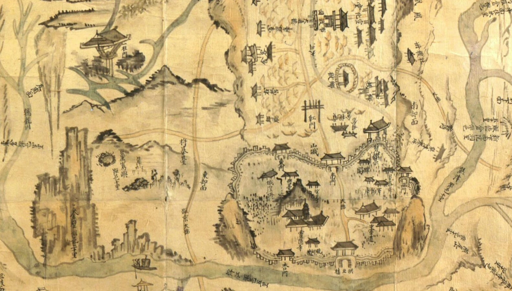
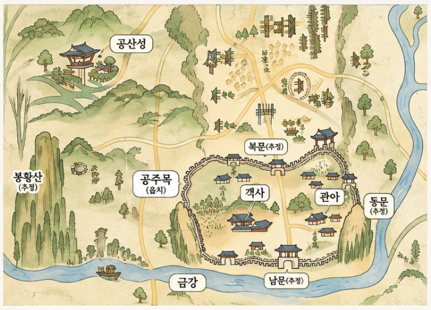
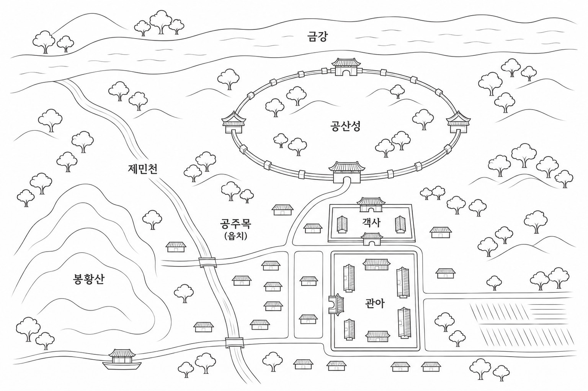
공간 구성과 인물 배치
제작용 배치도에 정리한 정보를 Blender에 연동한 Codex에 전달해 공간을 구축했습니다. 건축물은 사진 자료를 참고해 제작하고, 기획에서 정한 인물의 등장 위치에 맞춰 배치했습니다. 이 공간에서 카메라가 지나갈 길과 인물을 바라볼 구도를 정했습니다.
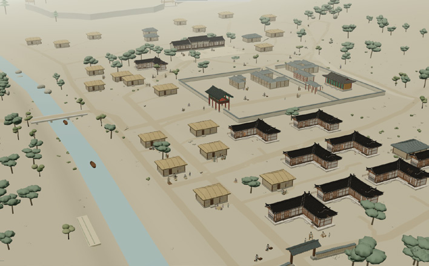
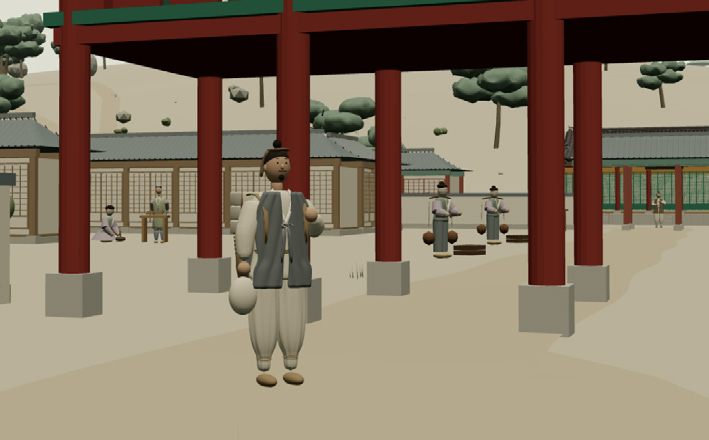
카메라 동선과 영상 추출
지도 위에서 제금루·동헌·객사·민가·봉황산을 거치는 동선을 먼저 정했습니다. Blender에서 카메라의 이동과 시점을 조정한 뒤 영상으로 렌더링했습니다. 이 영상에 어셋과 스타일 프레임을 더해 Higgsfield 영상 생성의 참고 자료로 사용했습니다.
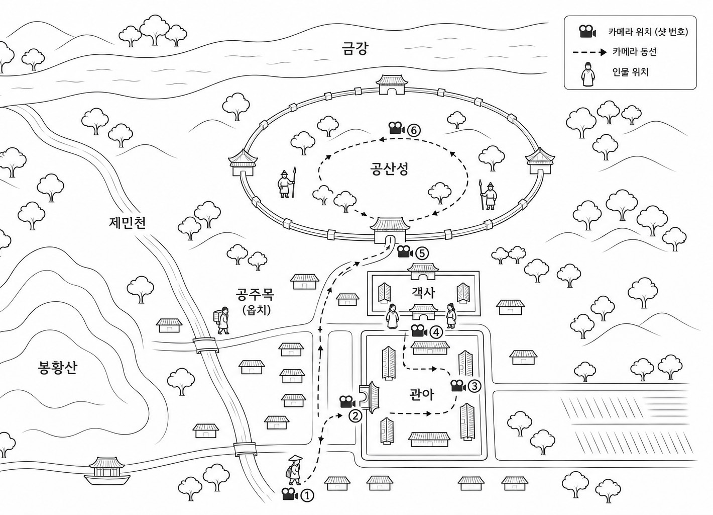
장면별 구도
마을 전경, 인물과의 만남, 두 석사자를 발견하는 장면의 구도를 Blender에서 정했습니다. 각 장면을 일러스트화할 때 이 구도를 바탕으로 인물과 건축물 어셋을 결합했습니다.
-
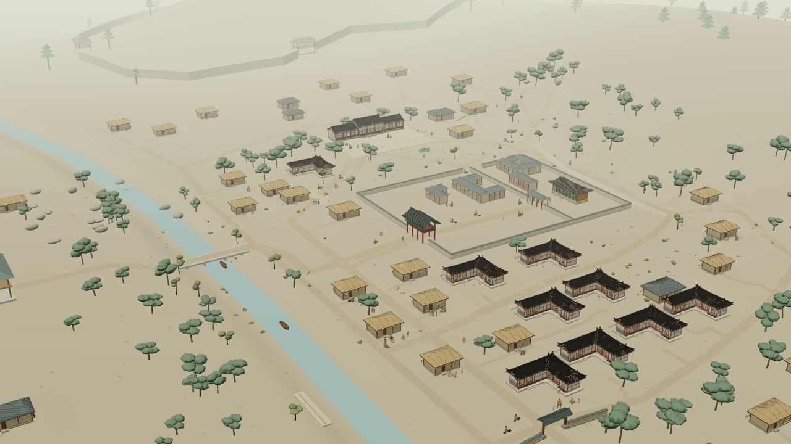
#01마을 전경 -
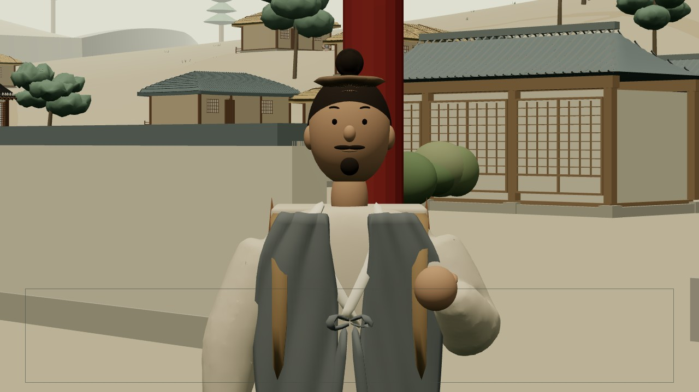
#02장사꾼 -
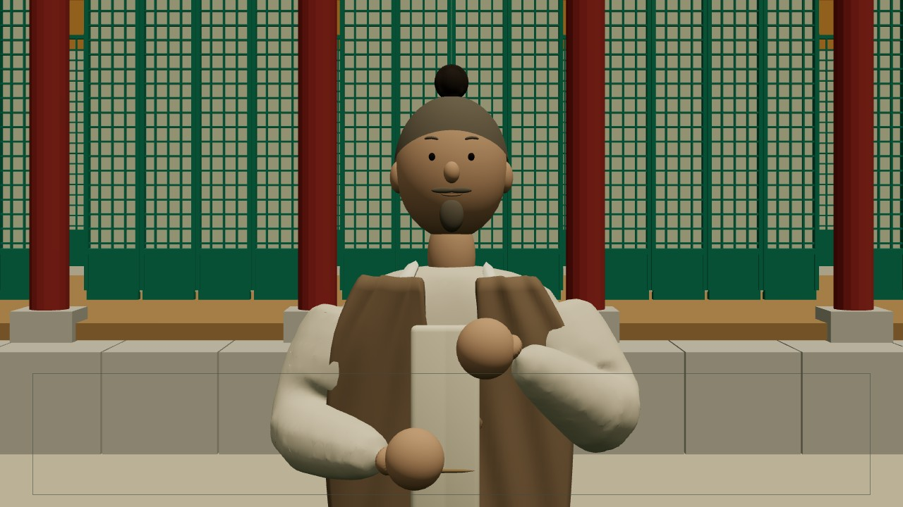
#03농민 -
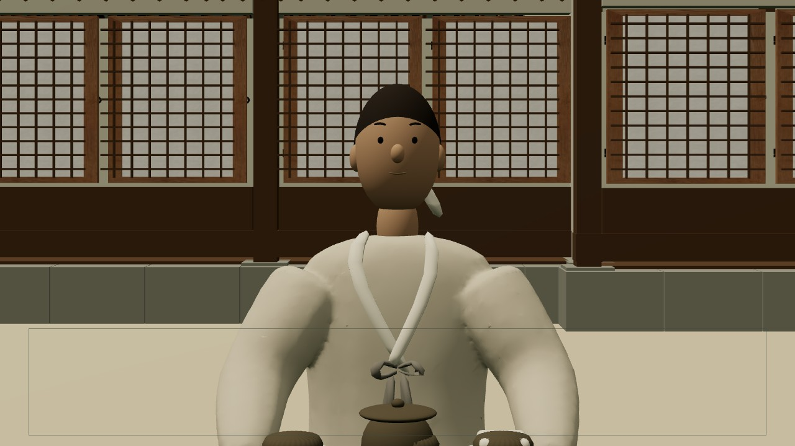
#04찬모 -
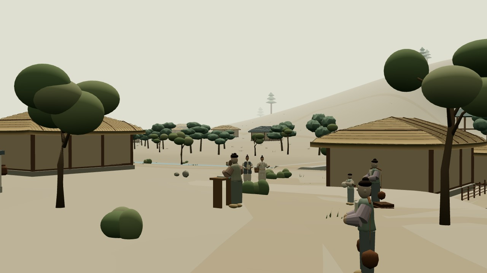
#05민가와 골목 -
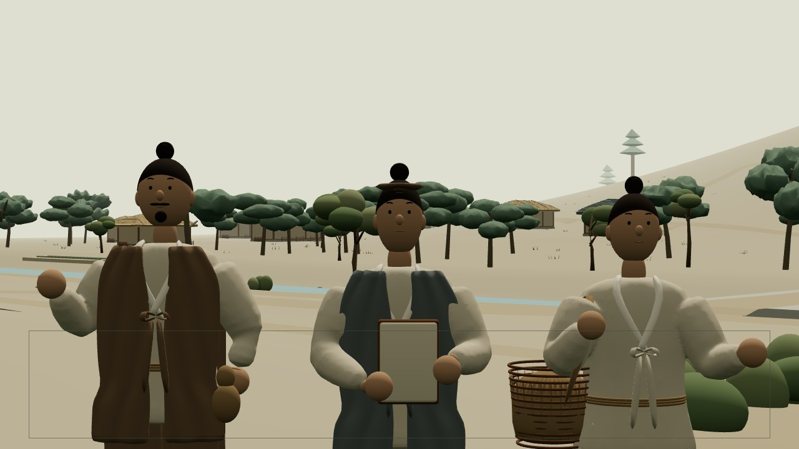
#06주민 삼총사 -
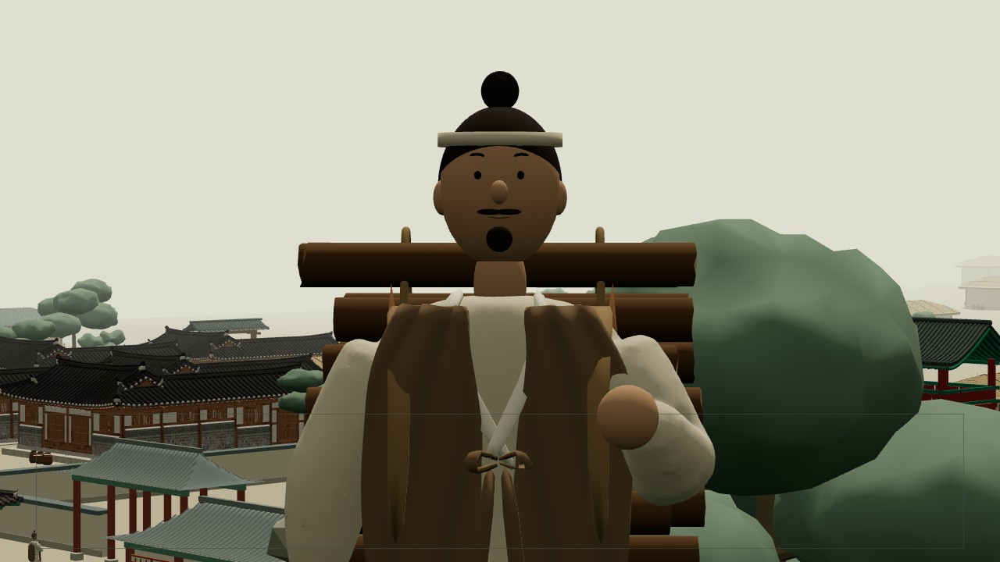
#07나무꾼 -
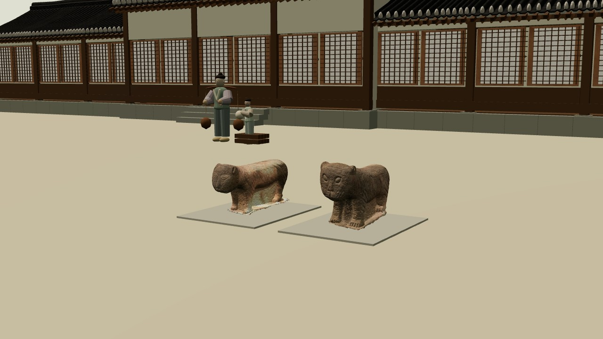
#08두 석사자 -
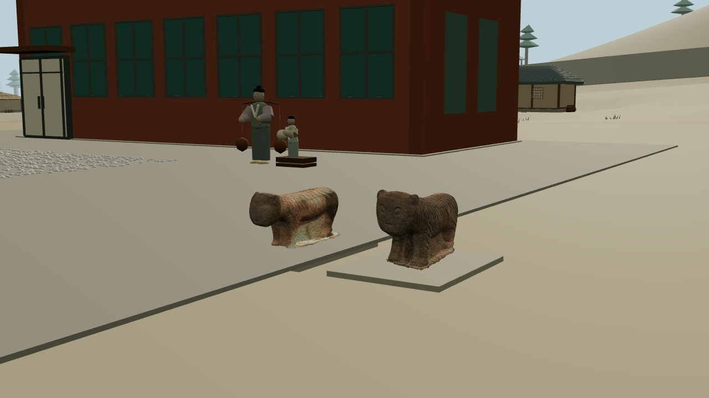
#09현재의 석사자
Blender 웹 미리보기
화면의 글자와 메뉴를 제외한 3D 공간에서 건물·인물의 배치와 카메라 동선을 살펴볼 수 있습니다.